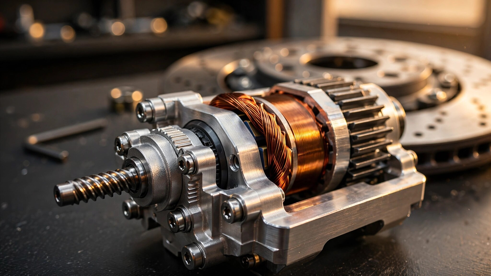

No Fluid, No Lines, No Master Cylinder: How Brembo Sensify Killed 100 Years of Hydraulic Brakes
The first production dry brake-by-wire system, the Mercedes SBC disaster that delayed it by two decades, and the C8 Corvette's cautious intermediate step toward eliminating hydraulic fluid from the braking equation.

Somewhere in a factory that Brembo won't name, producing cars for a manufacturer that Brembo also won't name, the first production vehicles without hydraulic brakes rolled off an assembly line in May 2026. No brake fluid, no master cylinder, and no lines running from the firewall to each wheel. Press the pedal, a sensor measures how hard and how fast, a computer decides what each wheel needs, and four electromechanical actuators clamp down independently. Everything that defined braking for the past century is not merely reduced but eliminated entirely.
Brembo calls it Sensify, and contracts already cover hundreds of thousands of units per year with type approval granted in most major markets. If you've been paying attention to how the automotive industry handles radical brake technology, you know exactly why this took so long, because the last company to try something this ambitious was Mercedes-Benz, and that experiment ended in 1.3 million recalls and an engineering reputation that took a full decade to rebuild.
A Hundred Years of Plumbing
Duesenberg put hydraulic brakes on a production car in 1921, Chrysler standardized four-wheel hydraulics across its lineup by 1924, and by the end of the 1940s the architecture was universal: press the pedal, force travels through a master cylinder into pressurized fluid, fluid pushes through lines to calipers, calipers squeeze rotors. Everything since has been modulation layered on top of that same plumbing. Disc brakes replaced drums, dual-circuit master cylinders added redundancy, and antilock braking systems arrived in mass production with the 1978 Mercedes W116 S-Class, using electronically controlled valves to pulse hydraulic pressure at each wheel, relieving approximately five bar per cycle in roughly 20-millisecond increments. Stability control, traction control, and brake-force distribution all manipulate hydraulic pressure through electronic valves grafted onto a fundamentally analog system.
What nobody changed was the medium itself. Fluid still carried the force, lines still connected the reservoir to each caliper, a premium vehicle's brake wiring harness could exceed five kilometers, and full system weight often topped 60 kilograms. Every 30,000 to 50,000 miles, a technician had to bleed the lines and replace the fluid, because brake fluid is hygroscopic and absorbs moisture from the atmosphere, which lowers its boiling point, which means your brakes fade earlier when they get hot, which is exactly the moment you need them most. For a century, nobody seriously questioned this arrangement because it worked reliably enough that the engineering community had no reason to look for alternatives.
SBC: When Mercedes Broke the Seal
Mercedes-Benz questioned it in 2001 with Sensotronic Brake Control, which debuted on the R230 SL-Class. The concept was elegant: decouple the pedal from the calipers entirely, run everything through a computer, and let electronics achieve what hydraulics couldn't, including variable brake-force distribution per wheel, faster response times, adjustable pedal feel, and what we would now call software-defined braking two decades before anyone used that phrase.
SBC still used fluid, and that distinction matters for understanding the architecture that came after it. An electric pump pressurized a reservoir to between 140 and 160 bar, four independent pressure modulators directed that stored energy to each caliper, and a travel sensor plus a pressure sensor at the pedal measured driver intent. A pedal-feel simulator recreated the resistance drivers expected, and in normal operation the master cylinder was physically detached from the brake circuit, existing only as a mechanical fallback if the electronics failed.
On paper, brilliant. In production, catastrophic. Pressure accumulators leaked, electronic modules malfunctioned, and drivers reported complete brake failure without warning. By March 2005, Mercedes had recalled 1.3 million vehicles across the SL, E-Class, CLS, and SLK lineups, and by 2006 SBC was dead, with high-volume models returned to conventional hydraulic brakes and the entire industry absorbing a lesson that would shape brake engineering for the next twenty years: if you replace the driver's physical connection to the brakes with electronics, the redundancy architecture has to be absolutely flawless, because one failure mode that results in zero braking force will erase a decade of brand credibility overnight.
SBC left scar tissue across the entire supplier base, and every brake-by-wire proposal that followed had to answer the same question: what happens when the power goes out? For two decades, nobody had a good enough answer.
eBoost: Corvette Wades In
General Motors found a compromise when the mid-engine C8 Corvette launched for 2020 with a system branded eBoost. It decoupled the pedal from the calipers during normal operation but kept hydraulic fluid for the last inch of the chain. Pedal input travels to a sensor, the sensor informs the computer, and the computer commands an integrated unit that combines the master cylinder, vacuum booster, vacuum pump, and electronic brake control module into a single compact assembly which then applies hydraulic pressure to the calipers.
Still wet, still reliant on fluid, but the driver's foot is no longer mechanically linked to the brake force at any point in the chain. Why bother with this intermediate step? Packaging, first. Fitting a conventional vacuum-assisted brake booster into the C8's mid-engine layout would have consumed space Chevrolet desperately needed, and eBoost's single integrated unit freed up enough room to fit two sets of golf clubs in the front trunk. Pedal feel consistency, second. Because the computer modulates hydraulic pressure rather than the driver's leg, eBoost delivers identical pedal response across Tour, Sport, and Track drive modes regardless of brake temperature, vacuum availability, or altitude, while a two-stage Brake Fade Warning System monitors thermal load in real time, alerting the driver at Level 1 and actively intervening at Level 2.
eBoost spread fast: Alfa Romeo Giulia and Stelvio Quadrifoglio, Cadillac CT4 and CT5, Porsche Taycan, Toyota and Lexus hybrids, Audi e-tron. By 2025, wet brake-by-wire was quietly standard across dozens of models from multiple manufacturers, and most owners had no idea because it felt normal, indistinguishable from the hydraulic brakes it replaced. Mercedes had proved that decoupling the pedal from the calipers was viable, GM proved the decoupling could be invisible to the driver, but neither approach eliminated the plumbing that carried the force from computer to caliper.
Sensify: The Clean Break
Brembo unveiled Sensify in 2021 after more than a decade of development, with production starting in May 2026 and a half decade of ISO 26262 functional-safety certification, cold-weather validation, redundancy testing, and the quiet engineering work of solving every failure mode that killed SBC separating those two dates.
Here is what's in the car. A brake pedal connects to a sensor module that measures force and rate of application, and beneath the footwell, a pedal-feel emulator recreates the resistance and travel that drivers expect from a hydraulic system: press harder and feel more pushback, press faster and feel the proportional increase. Drivers can customize pedal travel, resistance curve, and braking force mapping per driver profile through software, with presets saveable so that your braking feel loads when your key fob enters the cabin.
From the sensor module, signals travel electrically to two ECUs, one at the front axle and one at the rear, with each ECU commanding electromechanical actuators mounted at each wheel. Inside each actuator sits a high-precision reversible screw-jack motor, with no pistons, no fluid, and no lines anywhere in the chain. Screw jack extends, pad meets rotor, and friction does what friction has always done. When the driver releases the pedal, the screw jack retracts and a spring mechanism Brembo calls "Enesys" positively pulls the pads away from the rotor surface.
That retraction spring matters more than it sounds, because in a conventional brake, residual drag from pads lightly touching the rotor is a constant parasitic loss that nobody ever eliminated. Brembo claims eliminating this drag reduces fuel consumption by roughly ten percent in urban driving cycles, and for EVs where every watt-hour of range anxiety translates directly to engineering pressure, that free energy recovery is significant. Fewer particles shed from pads that aren't grinding when they shouldn't be, either, addressing the growing regulatory concern around brake dust as a particulate source in urban air.
Dual ECUs, Twin Coils, and the Ghost of SBC
Everything about Sensify's safety architecture reads like a direct, point-by-point response to what went wrong in Stuttgart twenty years ago. Two ECUs, front and rear, are linked as mutual failsafes: if the front unit loses power or detects an internal fault, the rear unit assumes full braking authority, and vice versa. Each individual actuator carries twin electromagnetic coils, so a single coil failure still leaves the actuator functional at that wheel. A backup power supply provides braking capability during total vehicle power loss. Redundancy isn't just a checkbox in this system; it's the entire reason the product exists in 2026 instead of 2016, because Brembo spent a decade making sure that no single point of failure could produce the outcome Mercedes experienced, where a driver pressed a pedal and nothing happened.
Independent per-wheel control is where Sensify's architecture becomes genuinely different from anything hydraulic, regardless of how sophisticated the valve modulation might be. In a conventional ABS system, electronic valves modulate hydraulic pressure by pulsing open and closed, which is why you feel that characteristic chattering through the pedal during hard stops, as each pulse relieves and reapplies pressure in coarse increments, sawing back and forth across the tire's grip limit rather than holding precisely at it.
Sensify doesn't pulse at all. Each actuator applies continuous, infinitely variable clamping force to its rotor. During an emergency stop from highway speed, the system reads wheel speed, steering angle, yaw rate, and road-surface data, then applies exactly the pressure each tire can accept without locking for even a fraction of a second. Car and Driver tested an early prototype on a pair of Tesla Model 3 Performance units and reported that ABS engagement was functionally undetectable, with smooth, silent deceleration from speed to stop, each tire held precisely at its adhesion limit rather than cycling above and below it in the stuttering pattern drivers associate with hard emergency braking.
Response time drops dramatically as well. Brembo's prototype testing measured roughly 90 milliseconds from pedal input to full clamping force, compared to the approximately 300 milliseconds that conventional hydraulic systems average. ZF, developing a competing dry system, claims up to nine meters shorter braking distance from 100 km/h in emergency scenarios, and at highway speed, nine meters is the difference between a close call and a collision.
The Performance Paradox
Full electromechanical braking at every corner sounds ideal until you scale up the caliper size and confront an uncomfortable physical constraint. A six-piston monobloc caliper on a GT car generates enormous clamping force, and the electromechanical actuator required to match that force through a screw-jack mechanism gets large and heavy. Mount that actuator at the wheel, and unsprung weight climbs in exactly the place where every gram matters most for ride quality and tire contact consistency.
Brembo solved this by not insisting on architectural purity. Sensify ships in two configurations: standard vehicles get full EMB at all four corners, the complete fluid-free architecture described above, while performance applications get a hybrid layout where the rear wheels run full EMB but the front wheels use what Brembo calls a "wet corner." In this arrangement, a traditional hydraulic caliper pairs with a screw-jack mechanism pressurizing a local master cylinder mounted inches from the caliper itself, with each front caliper having its own isolated master cylinder and its own short, sealed fluid circuit. No central reservoir, no long lines, just two tiny closed hydraulic systems, one per front wheel, that keep unsprung weight comparable to a conventional setup while preserving the clamping force needed for track-capable stopping power.
It's pragmatic in a way that suggests real engineering maturity rather than the compromise-phobic mindset that kills projects in their prototype phase. Full EMB is the purer architecture, but physics doesn't care about architectural purity when your front brakes need to arrest a two-ton car from 280 km/h. Brembo split the system, kept the rear dry for the efficiency and control benefits, and used a hybrid front end that contains its hydraulic elements to millimeters of line length rather than the meters required in conventional layouts.
Why Now
Electric vehicles killed the math that justified hydraulic complexity. BMW has stated publicly that current EV drivers "pretty much never" activate their friction brakes, and Mercedes reports that regenerative braking handles more than 90 percent of deceleration events in the GLC electric. If the hydraulic system fires once every few hundred stops, maintaining a pressurized fluid network, bleeding lines every 30,000 miles, and carrying 60 kilograms of hardware for that single activation is not engineering; it's inertia masquerading as reliability.
Autonomous driving sealed the case. Self-driving software needs sub-100-millisecond brake response, per-wheel force control, and software-addressable behavior that can be updated over the air, and while a hydraulic system modulated through electronic valves can approximate this, an electromechanical system where the software commands the actuator directly is inherently faster and more precise because no fluid intermediary adds latency or compliance to the signal path. OTA updates to Sensify-equipped cars can alter braking characteristics for new drive modes, towing packages, or track configurations without any physical modification to the hardware.
Brembo isn't the only company that sees this convergence: ZF has its own dry brake-by-wire system in development, claiming 17 percent more EV range through improved regenerative braking efficiency and reduced residual drag torques, while Continental and Bosch have active programs of their own. But Brembo shipped first, with production started in May 2026, contracts signed with multiple OEMs, and type approval granted, while everyone else is still talking about timelines rather than assembly lines.
What Actually Changed
Step back far enough and the parallel to throttle-by-wire is almost exact. When electronic throttle control replaced mechanical throttle cables in the late 1990s, enthusiasts protested that the system was too disconnected, too artificial, and riddled with failure modes. It took about a decade for the complaints to stop, not because the complaints were wrong but because the benefits accumulated until they overwhelmed the objections: traction management, launch control, cruise control integration, and engine mapping precision that mechanical cables couldn't deliver all became possible only because the throttle spoke to the engine through software rather than a steel wire.
Steer-by-wire followed the same arc, with Toyota putting it in the bZ4X in 2022, Lexus expanding deployment, and Infiniti trying it years earlier with mixed results. Each generation got better, each generation of complaints got quieter, and Brembo's bet is that brake-by-wire completes the trilogy, with the twenty-year gap between Mercedes SBC and Sensify representing the industry's overcorrection from a first attempt that failed spectacularly in the most safety-critical system on the car.
SBC failed because the redundancy wasn't there, and Sensify spent a decade making sure it is, with twin coils per actuator, dual ECUs with cross-failover, backup power for total loss scenarios, and independent per-wheel control that can redistribute braking authority across the car in milliseconds.
| Dimension | Conventional Hydraulic | Corvette eBoost | Brembo Sensify (Full EMB) |
|---|---|---|---|
| Pedal-to-clamp medium | Brake fluid | Brake fluid (computer-commanded) | Electric signal |
| Master cylinder | Central, single unit | Integrated into eBoost module | None |
| Hydraulic lines | Full length, all 4 wheels | Full length, all 4 wheels | None |
| ABS behavior | Valve pulsing (~20ms cycles) | Valve pulsing (electronically optimized) | Continuous modulation, no pulsing |
| Per-wheel independence | Limited (shared circuits) | Improved (electronic distribution) | Full (each actuator independent) |
| Response time | ~300ms | ~250ms (estimated) | ~90ms |
| Pedal feel | Direct mechanical feedback | Simulated, multi-mode | Simulated, customizable per driver |
| Brake fluid service | Every 30,000-50,000 mi | Every 30,000-50,000 mi | None required |
| Residual pad drag | Yes (parasitic loss) | Yes (parasitic loss) | No (Enesys spring retraction) |
| OTA updatable | No | Limited | Full (modes, feel, force mapping) |
Brembo has also been acquiring beyond brakes, and its purchase of Öhlins, the Swedish suspension specialist, signals a move toward what the company calls a "corner ecosystem": integrated control of braking, damping, and wheel dynamics through a unified software layer. Per-wheel brake control that communicates with per-wheel suspension control opens territory that no purely hydraulic architecture could reach, including mid-corner brake modulation that simultaneously adjusts damping to compensate for load transfer, and emergency avoidance where the system brakes individual wheels and stiffens corresponding dampers in a single coordinated response, transforming chassis control from a plumbing problem into a software problem.
Whether any of this matters to you depends on whether you've ever bled your own brakes. If you have, you know the ritual: jack the car up, open the bleeder valve, pump the pedal, watch for bubbles, curse when air gets in the line, and repeat three more times. Sensify makes that ritual extinct for the vehicles it equips, because there is no fluid to change and no lines to bleed. Brembo claims the electromechanical calipers are "lifetime parts," with only pads and rotors requiring replacement, while the hybrid performance configuration's short local fluid circuits still need occasional service but at a scope measured in centimeters rather than meters.
A century is a long time for any engineering paradigm to hold, and hydraulic brakes held because they worked, because the failure modes were understood, and because nobody built a replacement that matched the reliability while offering meaningfully better performance. That last condition changed in May 2026. Whether it sticks depends on what happens when the first Sensify-equipped car gets rear-ended in a parking lot and the actuator takes a hit, or when an owner in Minnesota starts the car at minus 30 and expects instant response from an electric motor that's been sitting cold all night. Real-world edge cases will test what lab validation certified. They always do.
But the trajectory is clear: throttle cables are gone, steering columns are leaving, and brake lines are next. Brembo just shipped the proof.